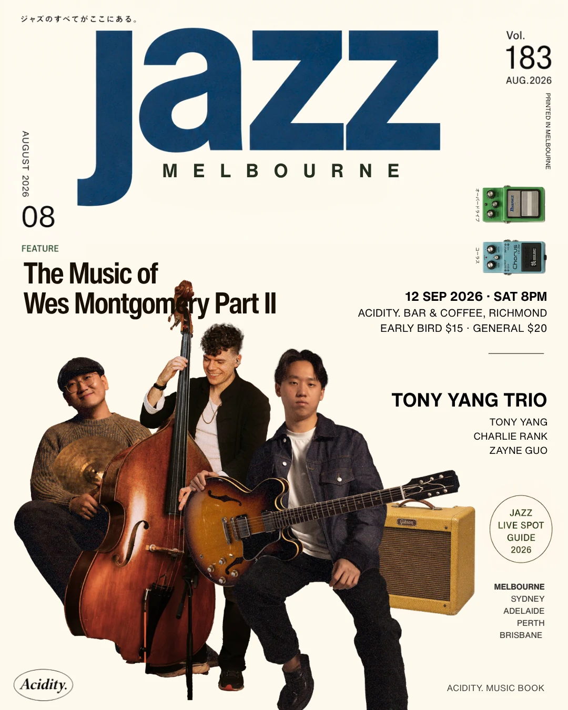

Live at Acidity
Music of Wes Montgomery
Part II explores Wes Montgomery’s repertoire, warm thumb-picked tone, octave language and melodic improvisation across two sets.
- Date
- Saturday, 12 September 2026
- Time
- Doors 7:30PM · Music 8PM
- Line-up
- Tony Yang — Guitar
Charlie Rank — Double Bass
Zayne Guo — Drums - Tickets
- Early Bird $15 · General $20